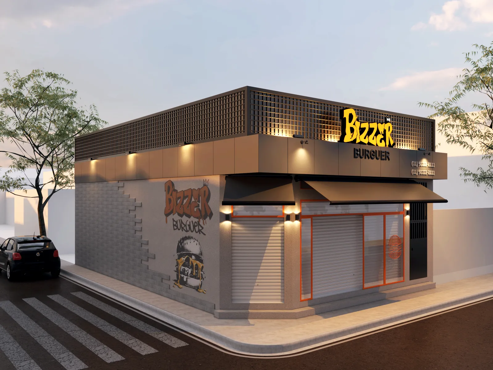
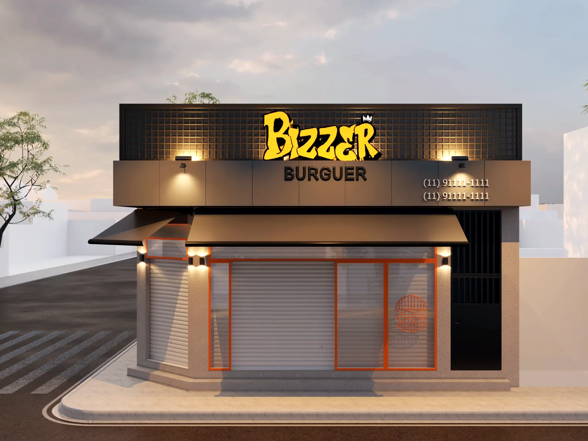

Projeto executado
Bizzer Burguer
Fachada de esquina que vira marca: brise metálico em grelha, luz rasante na platibanda e arte urbana em diálogo com a rua.
Destaques do projeto
- Brise metálico em grelha que unifica a platibanda
- Iluminação de fachada que destaca a marca à noite
- Toldos, caixilhos laranja e grafite como identidade


Como pedir o seu projeto
Gostou desta inspiração?
Leve esta referência para o seu projeto em três passos.
- 01Escolha uma inspiração
Navegue pelos projetos e guarde o que tem a ver com você.
- 02Monte seu orçamento
Marque arquitetura, interiores e/ou paisagismo no botão Orçamento.
- 03Envie pelo WhatsApp
Seu pedido chega pronto para o Johnathan, que responde com os próximos passos.
Projeto MOSARQ — Mosanik Arquitetura e Paisagismo, por Johnathan Mosanik Antoneti. Imagens: perspectivas do projeto.